Write what only you know: who is in each picture, where it is and when. What you type is kept in this browser as you go. Save the file when you are done.
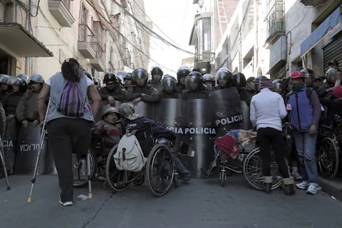
1 of 81. La Lucha. police-line
2 of 81. La Lucha. megaphone
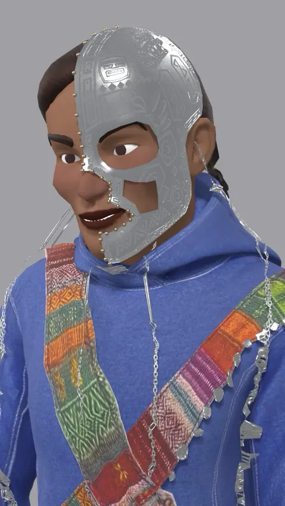
3 of 81. No work set. masked-character
4 of 81. La Lucha. green-hat
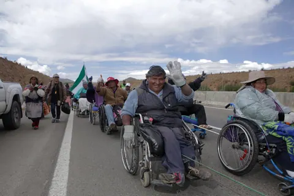
5 of 81. La Lucha. march-on-the-road
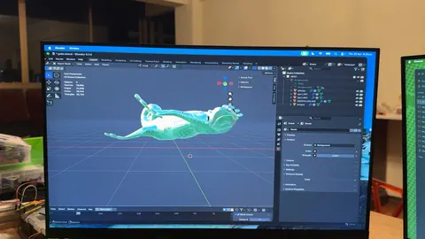
6 of 81. The lab. gecko-on-screen
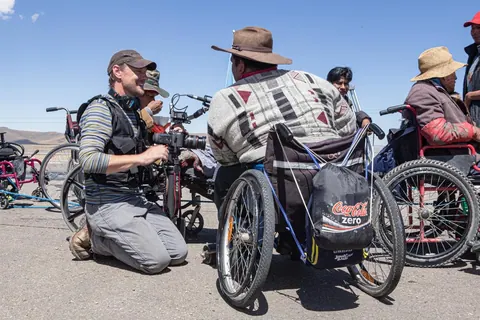
7 of 81. La Lucha. filming-the-march
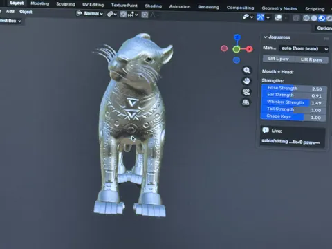
8 of 81. The lab. jaguaress-model
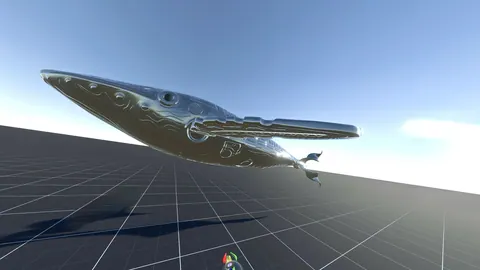
9 of 81. Yakumama. whale-on-grid
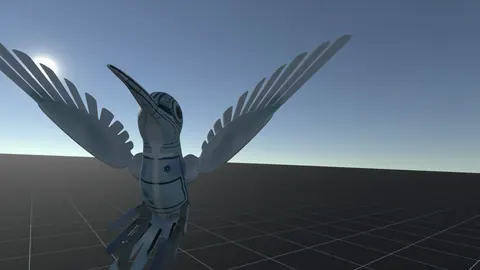
10 of 81. The lab. bird-wings
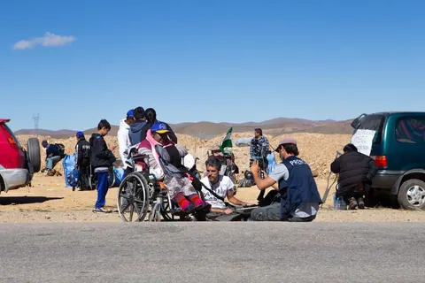
11 of 81. La Lucha. roadside-rest
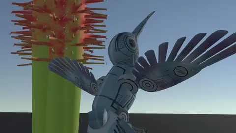
12 of 81. The lab. bird-and-cactus
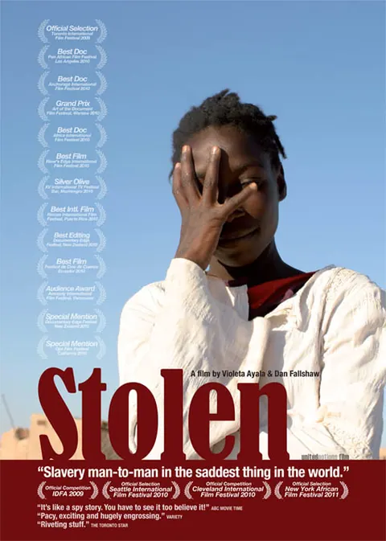
13 of 81. Stolen. stolen-poster
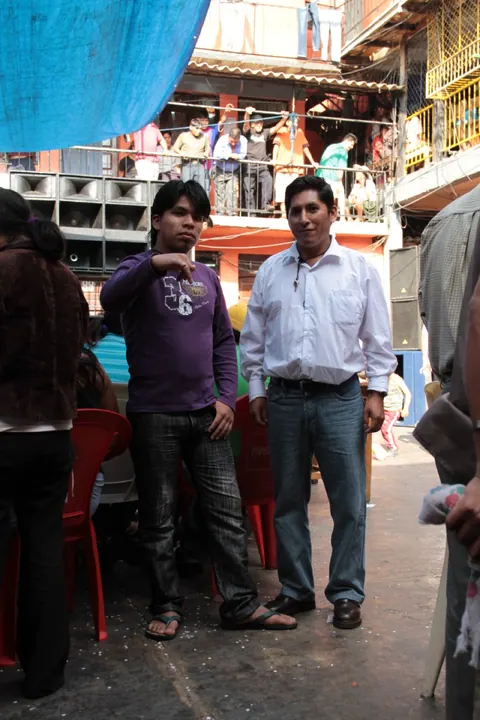
14 of 81. Cocaine Prison. prison-courtyard
15 of 81. No work set. tiff-trio
16 of 81. The Bolivian Case. document
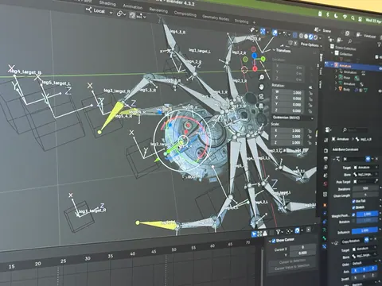
17 of 81. The lab. spider-rig
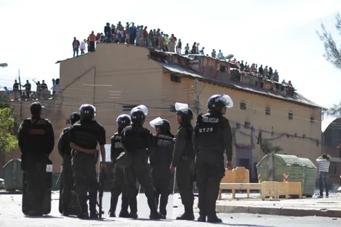
18 of 81. Cocaine Prison. prison-riot-police
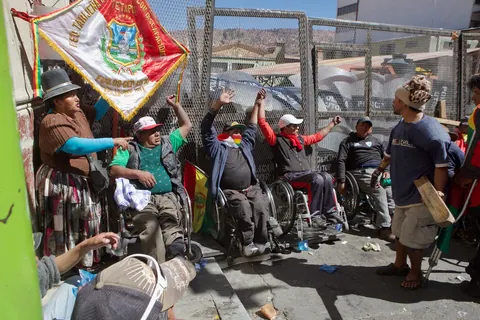
19 of 81. La Lucha. fence-banner
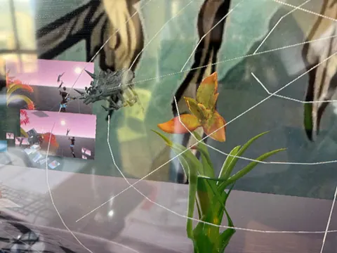
20 of 81. The lab. orchid-and-web
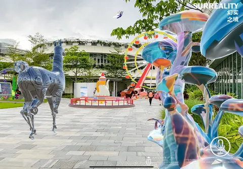
21 of 81. Las Awichas. surreality-plaza
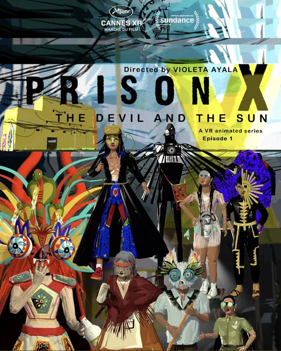
22 of 81. Prison X. prison-x-poster
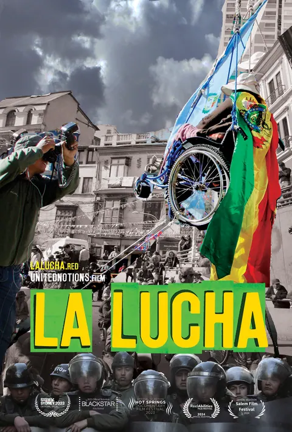
23 of 81. La Lucha. la-lucha-poster
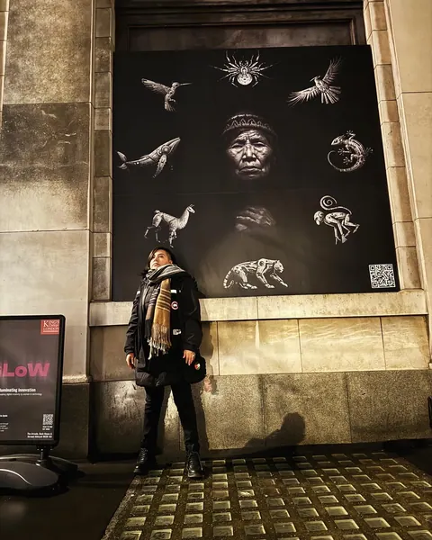
24 of 81. Las Awichas. awichas-on-the-strand
25 of 81. No work set. sundance-marquee
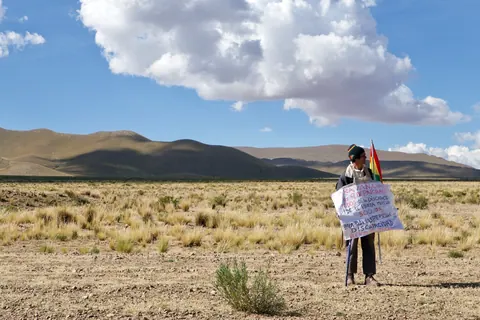
26 of 81. La Lucha. lone-protester
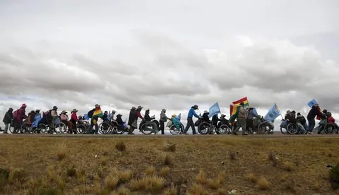
27 of 81. La Lucha. march-altiplano
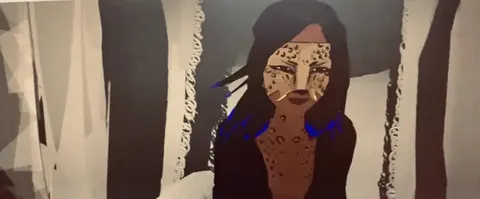
28 of 81. No work set. jaguar-woman
29 of 81. No work set. red-carpet
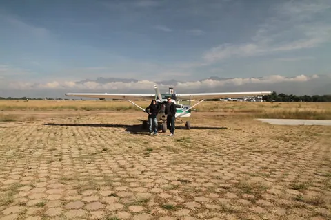
30 of 81. No work set. small-plane
31 of 81. No work set. ridge-silhouettes
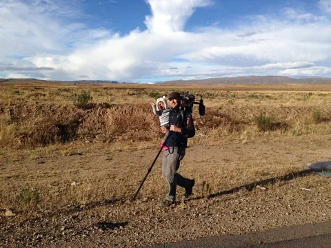
32 of 81. La Lucha. camera-on-the-altiplano
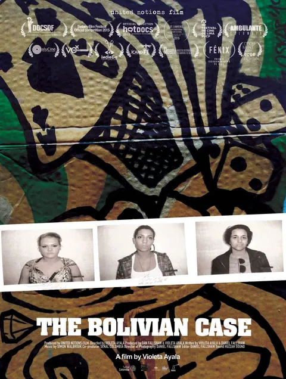
33 of 81. The Bolivian Case. the-bolivian-case-poster
34 of 81. The Bolivian Case. hospital-bed
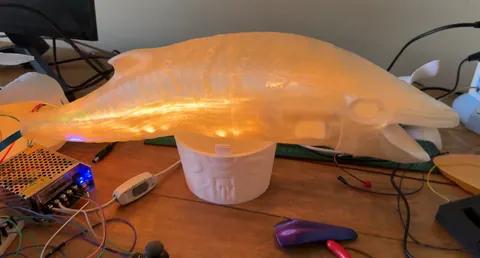
35 of 81. Yakumama. whale-print
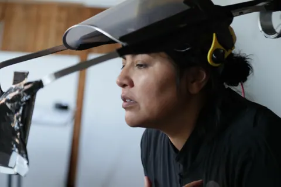
36 of 81. No work set. head-rig
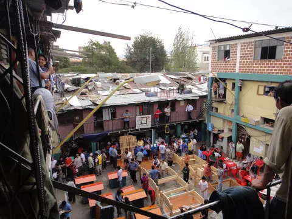
37 of 81. Cocaine Prison. prison-from-above
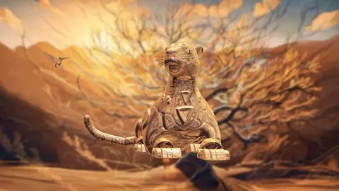
38 of 81. Huk the Jaguaress. golden-jaguar
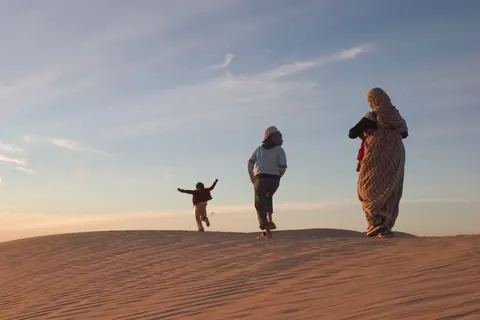
39 of 81. Stolen. dune-at-dusk
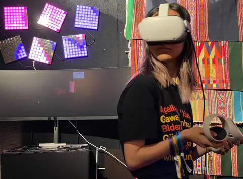
40 of 81. Prison X. prison-x-player
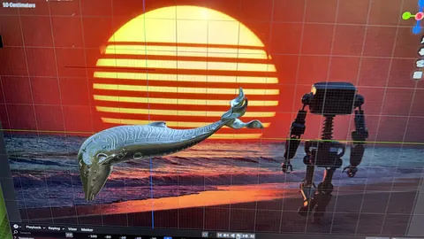
41 of 81. Yakumama. whale-and-robot
42 of 81. No work set. red-neon-portrait
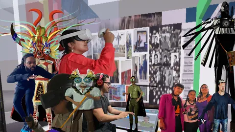
43 of 81. Prison X. prison-x-masks
44 of 81. Huk the Jaguaress. cph-dox
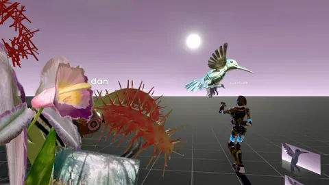
45 of 81. The lab. orchid-hummingbird
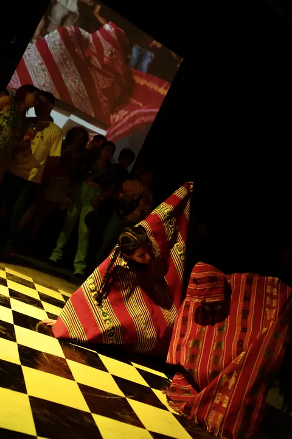
46 of 81. Todo Nace Desde Lo Pequeño. todo-nace-dancers
47 of 81. La Lucha. plaza-screen
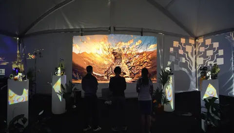
48 of 81. Huk the Jaguaress. huk-installation
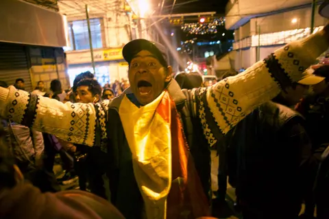
49 of 81. The Fight. shout-at-night
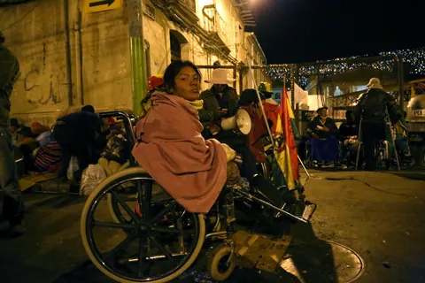
50 of 81. La Lucha. pink-blanket
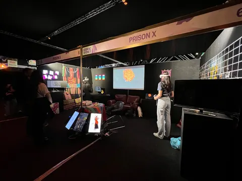
51 of 81. Prison X. prison-x-booth
52 of 81. The Fight. fence-at-night
53 of 81. No work set. awards-selfie
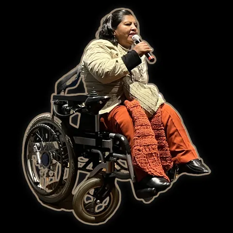
54 of 81. La Lucha. microphone
55 of 81. No work set. press-wall
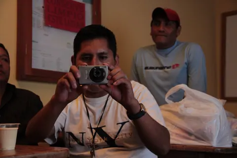
56 of 81. Cocaine Prison. inmate-camera
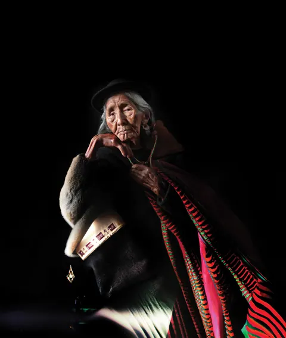
57 of 81. Las Awichas. awicha-red
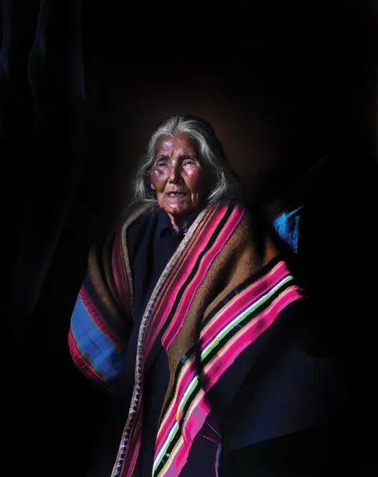
58 of 81. Las Awichas. awicha-stripes
59 of 81. Prison X. neon-headset
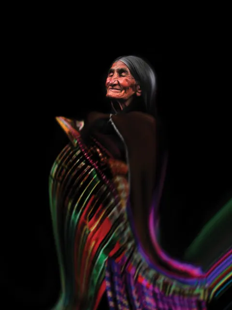
60 of 81. Las Awichas. awicha-weaving
61 of 81. No work set. vr-headset
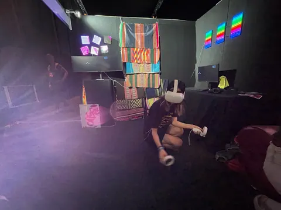
62 of 81. Prison X. prison-x-booth-haze
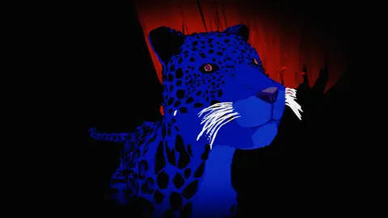
63 of 81. Prison X. blue-jaguar
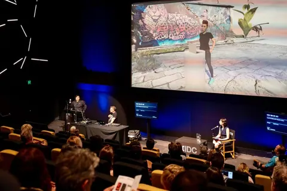
64 of 81. No work set. stage-talk
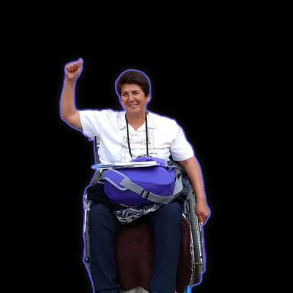
65 of 81. La Lucha. raised-fist
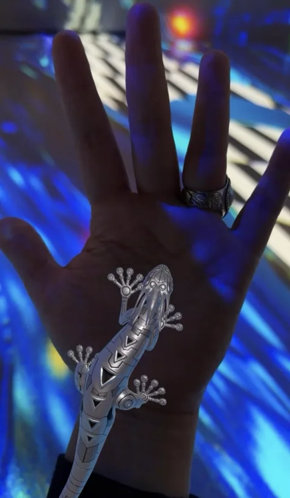
66 of 81. Las Awichas. awichas-in-the-hand
67 of 81. Las Awichas. awichas-gallery
68 of 81. No work set. three-filmmakers
69 of 81. The Fight. cnn-studio
70 of 81. Cocaine Prison. cocaine-prison-poster
71 of 81. Huk the Jaguaress. blue-jungle
72 of 81. Todo Nace Desde Lo Pequeño. todo-nace-stage
73 of 81. No work set. creature-on-moss
74 of 81. La Lucha. plaza-premiere
75 of 81. Todo Nace Desde Lo Pequeño. checked-floor
76 of 81. The Fight. the-fight-poster
77 of 81. Las Awichas. awicha-wind
78 of 81. No work set. screening-room
79 of 81. Las Awichas. awicha-light
80 of 81. Las Awichas. las-awichas-poster
81 of 81. Las Awichas. awicha-hands